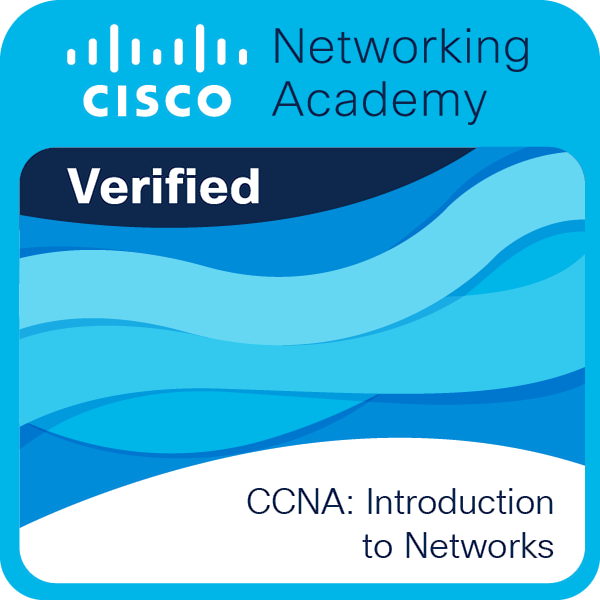
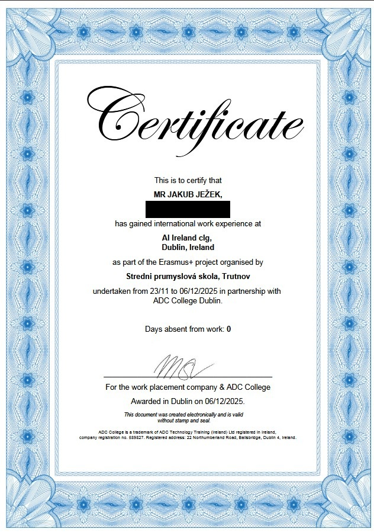

Ahoj, já jsem Jakub
Baví mě HomeLab
Vystudoval jsem počítačové systémy na SPŠ Trutnov. Zajímám se o počítačové sítě, stavbu HomeLabu (Proxmox, IoT) a tvorbu moderního frontendu s důrazem na UX. Rád píšu python skripty pro automatizaci.
name: "Jakub Ježek",
education: "SPŠ Trutnov",
specialty: ["Networks", "HomeLab", "UX"],
virtualization: "Proxmox VE",
iot: ["Raspberry", "ESP32"]
};
O mně
Moje zaměření and IT cesta
Moje cesta
Mám čerstvě za sebou úspěšné studium oboru Elektronické počítačové systémy na Střední průmyslové škole Trutnov, Školní 101. Aktuálně mířím na vysokou školu, kde chci v IT dále pokračovat.
Můj záběr v IT je poměrně široký – nejsem jen čistý vývojář. Nejvíce času trávím konfigurací sítí (routery, switche, AP) a správou domácí infrastruktury. Doma provozuji vlastní server s Proxmox VE, na kterém hostuji herní servery a chytrou domácnost.
Kromě hardwaru a sítí mě baví frontendový design (UX/UI), kdy si užívám tvorbu čistých a přívětivých rozhraní pro koncové uživatele, a psaní menších skriptů v Pythonu, které mi usnadňují rutinní práci.
Certifikáty & Stáže
Kliknutím na Cisco certifikát přejdeš na online ověření. Kliknutím na stáž zobrazíš dokument.

Cisco CCNA 1
Routing & Switching Essentials

Erasmus+ Irsko 2025
Zahraniční odborná IT stáž
Vzdělání & Zkušenosti
Vysoká škola
Plánované pokračování v IT oboru pro prohloubení teoretických i praktických znalostí.
SPŠ Trutnov, Školní 101 (Maturita)
Obor Elektronické počítačové systémy. Úspěšné zakončení studia maturitou.
Domácí HomeLab & Sítě
Stavba a konfigurace lokální sítě, virtualizace přes Proxmox a IoT integrace (Home Assistant).
Dovednosti
S čím pracuji a co mě baví
Sítě & Hardware
Konfigurace routerů, switchů a AP. Návrh a příprava domácí síťové infrastruktury.
Virtualizace & HomeLab
Správa serveru s Proxmox VE, hostování herních serverů a Home Assistant integrace.
IoT & Mikročipy
Tvorba projektů na platformách Raspberry Pi, Arduino a čipech řady ESP (ESP8266, ESP32).
Frontend & UX Design
Záliba v ladění uživatelského rozhraní (UX) s využitím moderních frameworků (Next.js, Tailwind CSS).
Python Automatizace
Psaní menších skriptů a nástrojů (i s GUI) pro zjednodušení a automatizaci práce.
Kyberbezpečnost
Zájem o bezpečnost sítí, penetrační testování a ochranu systémů (samostudium).
Projekty
Na čem aktivně pracuji
Wivak Rentals (wivak.cz)
Moderní rezervační systém pro ubytování v Krkonoších. Cílí na mezinárodní turisty s plnou lokalizací (CS, EN, DE, NL). Obsahuje administrační rozhraní, chytrý rezervační formulář s honeypot ochranou a automatické e-maily.
Proxmox HomeLab & Smart Home
Lokální server postavený na Proxmox VE, který slouží jako srdce naší domácnosti. Zajišťuje běh Home Assistantu pro IoT chytrou domácnost, správu Minecraft serveru pro přátele a zálohovací sysémy.
Python Automatizační Skripty
Soubor drobných nástrojů a skriptů napsaných v Pythonu pro urychlení každodenní práce. Zahrnuje jak čistě konzolové nástroje, tak jednoduchá GUI rozhraní (např. automatizace herních úloh / bot core).